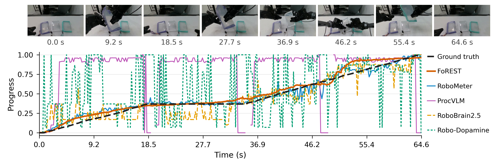

Embodied AI · Progress reward models
POMDP-Bench: can progress reward models tell when a step is already over?
A robot puts the block back where it started, and the frame looks almost identical to the beginning — yet it has already completed a round of manipulation. POMDP-Bench asks whether progress reward models can use interaction history to tell such moments apart.

Why the current frame is not enough
Progress estimation is only partly observable. Two episodes can share a nearly unchanged observation while sitting at different points in the task, so the answer depends on what the agent has already done rather than on what the camera currently shows.
What the benchmark measures
The benchmark spans 53 tasks and 2,209 trajectories. It probes repeated counting, latent state, subtask ordering, and failure and recovery. Stage-level annotations record when a task advances, stalls, or regresses.
What we found
An evaluation of seven models found that agreement in the overall trend can still hide missed failures. On ten failure-and-recovery trajectories, FoREST reaches an overall Spearman correlation of 0.981, yet it still struggles to locate where a failure begins.